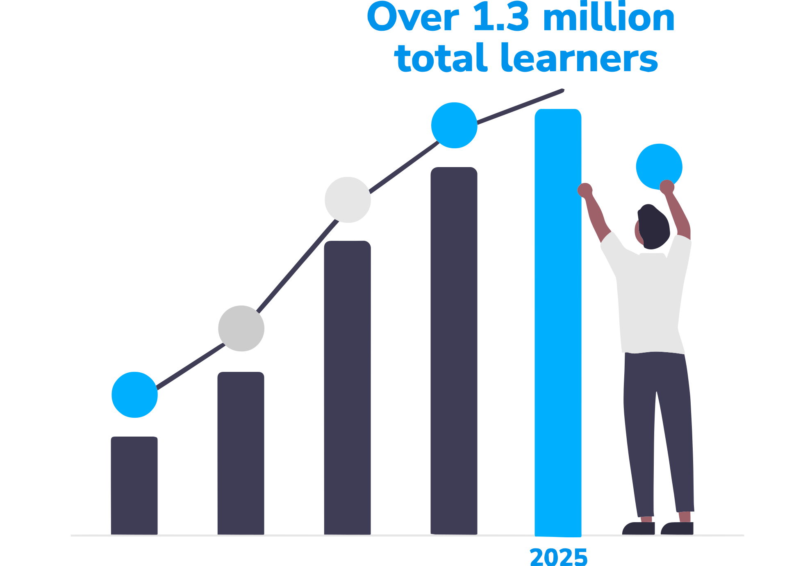

We have reached over 1 million learners on TestDrive! Thank you for joining us in our mission to prepare young people for the online world!
Practice digital literacy skills in a social media simulation
Social Media TestDrive prepares young people for the online world through experiential learning in a simulated social media environment.

Education for the digital age
Social Media TestDrive simulates realistic digital dilemmas and scenarios that young people may encounter as they enter the social media world.
Each module teaches essential digital citizenship concepts, covering topics such as privacy, online identities, cyberbullying, and more.


Prepare youth for the online world
TestDrive is most effective for new social media users or those who are likely to enter into the social media world in the near future. Our target audience is middle school-aged youth, but we welcome everyone to explore it.
Social Media TestDrive modules can be used individually, in pairs, or as a guided group activity in educational settings.

A trusted resource for the classroom
Educators can use Social Media TestDrive to engage with students and spark conversations around what it means to practice digital citizenship on social media.
Social Media TestDrive’s modules are aligned with Common Sense Education's Digital Citizenship Curriculum to provide coverage for a wide range of topics in digital literacy.